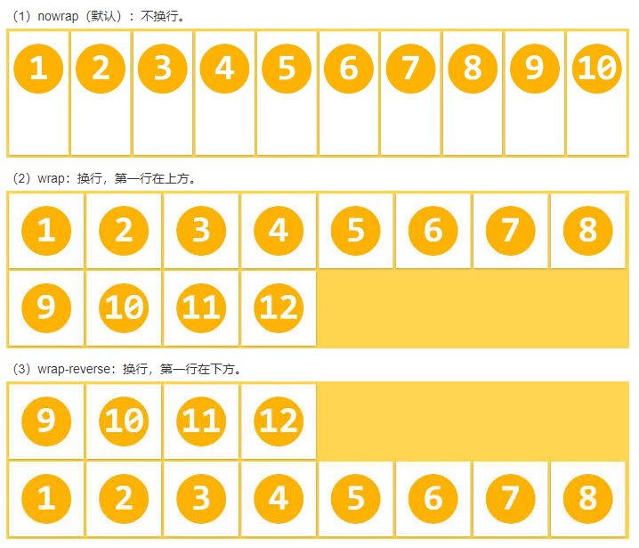
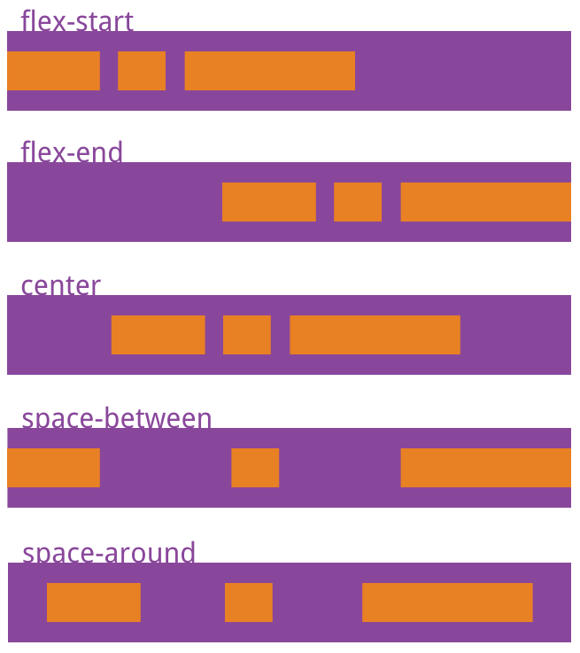
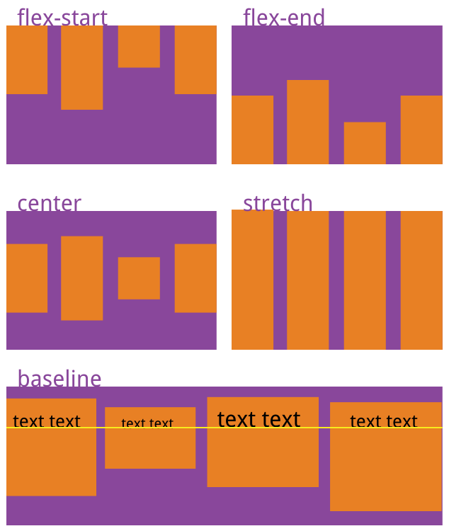

Flex 布局
create by jsliang on 2019-3-27 13:36:02
Recently revised in 2019-05-30 21:25:35
万丈高楼平地起，熟悉 Flex 需要先了解 Flex 的下面这 6 个 CSS 属性：
/* 设置 Flex 模式 */
display: flex;
/* 决定元素是横排还是竖着排，要不要倒序 */
flex-direction: column;
/* 决定元素换行格式，一行排不下的时候如何排 */
flex-wrap: wrap;
/* flex-flow = flex-direction + flex-wrap */
flex-flow: column wrap;
/* 同一排下对齐方式，空格如何隔开各个元素 */
justify-content: space-between;
/* 同一排下元素如何对齐，顶部对齐、中部对齐还是其他 */
align-items: center;
/* 多行对齐方式 */
align-content: space-between;
下面我们详细分析这些元素的情况：
知识点 1. flex-direction：决定主轴的方向
row- （默认）水平方向，起点在左端row-reverse- 水平方向，起点在右端column- 垂直方向，起点在上沿column-reverse- 垂直方向，起点在下沿
display: flex;
flex-direction: row | row-reverse | column | column-reverse;
知识点 2. flex-wrap：一条轴线（一行）排不下时如何解决
nowrap- （默认）不换行wrap- 换行，第一行在上方wrap-reverse- 换行，第一行在下方
display: flex;
flex-wrap: nowrap | wrap | wrap-reverse;

知识点 3. flex-flow：flex-flow = flex-direction + flex-wrap。即 flex-flow 是这两个属性的合集
row nowrap- （默认）水平方向，起点在左端，不换行
display: flex;
flex-flow: <flex-direction> || <flex-wrap>;
详解参考 1 和 2
知识点 4. justify-content：定义项目在主轴上的对齐方式
flex-start- 左边对齐flex-end- 右边对齐center- 居中对齐space-between- 两端对齐，空格在中间space-around- 空格环绕
display: flex;
justify-content: flex-start | flex-end | center | space-between | space-around;

知识点 5. align-items：定义项目在交叉轴上如何对齐
flex-start- 顶部对齐，即文字图片等顶部同一条线上flex-end- 底部对其，即文字图片等底部在同一条线上center- 中间对其，即文字图片不管多高，都拿它们的中间放在同一条线上stretch- 将文字图片充满整个容器的高度，强制统一baseline- 将每项的第一行文字做统一在一条线上对齐
display: flex;
align-items: flex-start | flex-end | center | stretch | baseline;

知识点 6. align-content：定义多根轴线的对齐方式。如果只有一根轴线（只有一行），该属性不起作用
flex-start- 这几行顶部对齐flex-end- 这几行底部对齐center- 这几行居中对齐stretch- 这几行进行扩展或者缩放，从而填满容器高space-between- 这几行中间使用空格进行填充space-around- 这几行两边及中间进行填充
display: flex;
align-content: flex-start | flex-end | center | space-between | space-around | stretch;
jsliang 的文档库 由 梁峻荣 采用 知识共享 署名-非商业性使用-相同方式共享 4.0 国际 许可协议进行许可。
基于https://github.com/LiangJunrong/document-library上的作品创作。
本许可协议授权之外的使用权限可以从 https://creativecommons.org/licenses/by-nc-sa/2.5/cn/ 处获得。